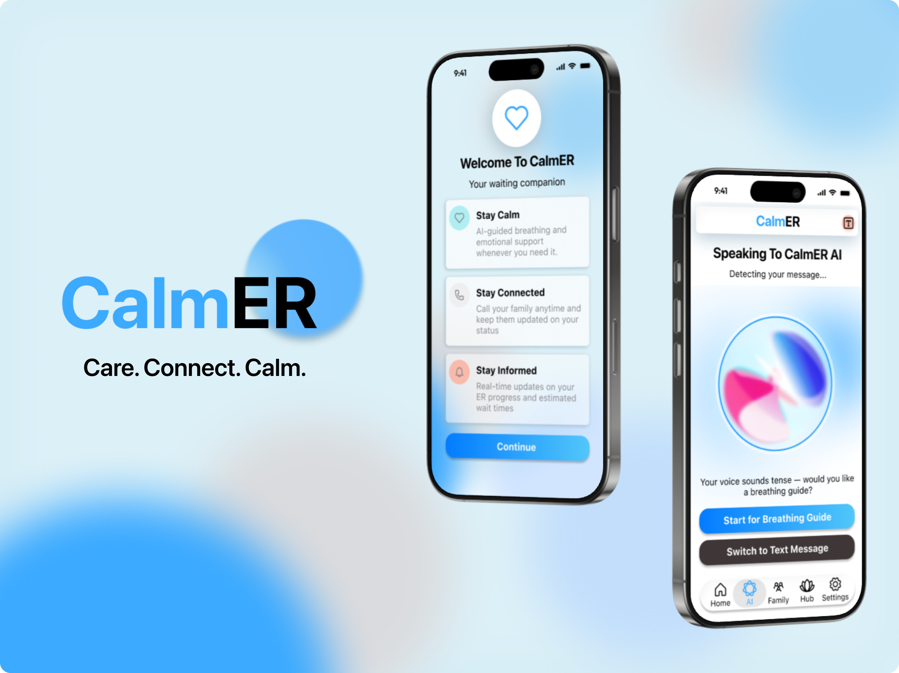

Hi, I'm Sophia
Designing intuitive,
meaningful experiences
for everyone.
I bridge design thinking and technical precision to create accessible experiences that make technology easier for everyone.
UX Research
✦
UI Design
✦
User Testing
✦
Prototyping
✦
Accessibility
✦
UX Research
✦
UI Design
✦
User Testing
✦
Prototyping
✦
Accessibility
✦
✦ ABOUT ME
✦ FEATURED WORK
Selected Projects
A showcase of my recent design and research work.

Award Winner
CalmER
A calming companion app for emergency room patients, reducing anxiety through information transparency and personalized support.
Password Protected
NDA · General Motors
In-Vehicle Infotainment System
Designing a next-generation IVI experience for a major automotive brand — media, navigation, vehicle controls, personalization, and driver cluster.
Capstone Project
Backyard Brains HHI
Designing a multi-user mobile experience for a neuroscience toolkit — enabling remote, consent-first HHI experiments for students and educators.